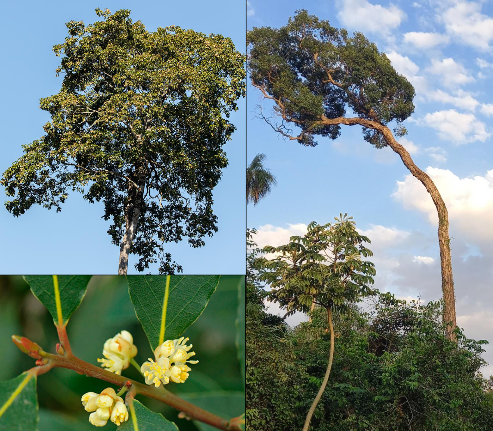
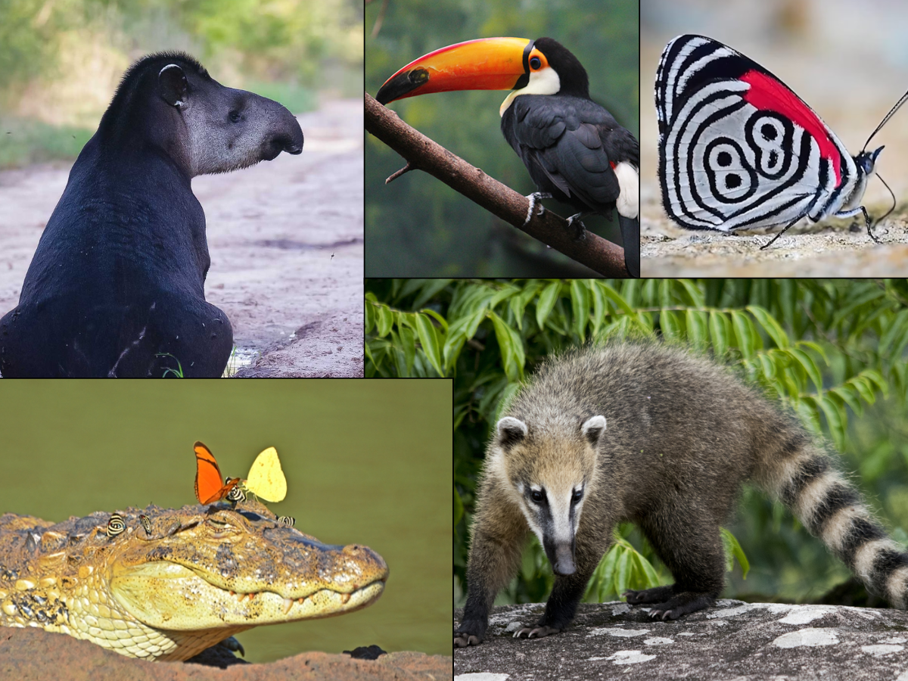

Ecorregiones

En su extensión culmina el río homónimo, formando las mundialmente reconocidas Cataratas del Iguazú antes de reunirse con el Paraná. En sus 67000 hectáreas, protege un importante ejemplar de la selva paranense, dando una de las escenas más espectaculares del mundo: las Cataratas del Iguazú, una de las siete maravillas del mundo natural.


Entre las componentes vegetales de la selva misionera, se erguirá la silueta del palo rosa, un árbol que puede superar los 40 metros de altura (lo que son varias cabezas por encima de otras plantas). Asimismo, se destaca el guatambú, de competente altura, y el palmito, una palmera que la juventud denominaría como de "forma clásica". En un apartado más delicado se encuentra el laurel, con sus hermosas flores amarillas.
Ni bien uno entra al parque, tendrá la chance de observar al único e inigualable tucán toco, un ave imponente, no tanto por su tamaño (siendo el maor de los tucanes) sino por el colorido de su plumaje, refinado negro con blanco, y el contrastante de su pico, puro y saturado de naranjas; y, sobre las plantas, para el ojo observador, se topará con la mariposa 88, que tiene un patrón numérico tal en sus alas. En los caminos, ya más aventurados en la espesura de la selva, será inevitable el encuentro con una manda de coatíes, parientes lejanos del mapache, que se acercan curiosos a los turistas, esperando alimento fácil (el cual, en la mayoría de los casos, resulta perjudicial para su salud directamente al tratarse de comida procesada; además de que pierden sus institos de temor naturales).
Luego, al ingresar a las pasarelas que cruzan por sobre el agua, se podrán observar una gran diversidad de peces y reptiles acuáticos, como las trotugas y el yacaré overo, un pequeño caimán especializado en comer cangrejos de río y animales duros en general. Si se tiene suerte, cerca de la rivera se podrá divisar a la danta (o tapir), el mayor mamífero herbívoro de Sudamérica, dueño de una pequeña trompa y de hábitos subacuáticos. Este último se presenta como una de las mayores reliquías de la América subtropical y tropical, por lo que su conservación es de extrema importancia, al dispersar semillas de todo tipo de especies vegetales, sirviendo de un verdadero "jardinero de los bosques".
